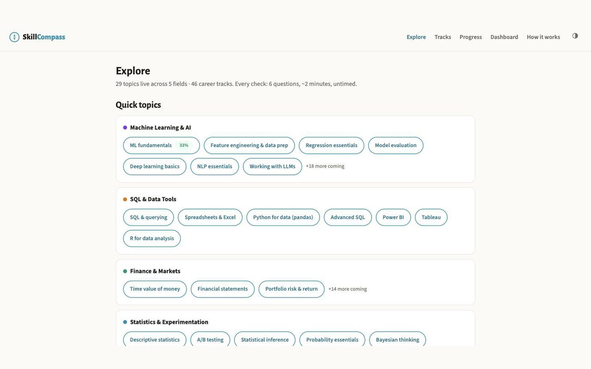

SkillCompass
Skill checks scored like chess ratings
SkillCompass gives two-minute quizzes in 40-plus fields, rates them Elo-style on real response data, and returns a percentile, a knowledge map and a study plan. Runs full stack on $0 a month.